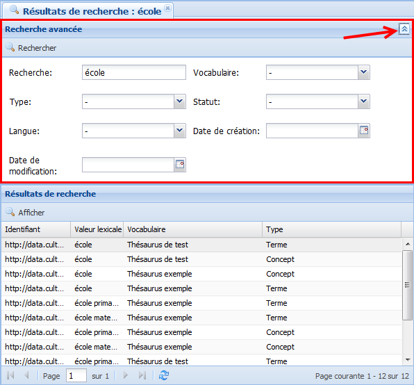

Recherche avancée
ProcédureEffectuer une recherche avancée⚓
Pour accéder aux fonctions de recherche avancées, vous devez avoir réalisé au préalable une Recherche simple.
Depuis l'onglet
Résultats de recherche, cliquez sur le bouton , à droite de la barre de titre
, à droite de la barre de titre Recherche avancée.Les fonctions de recherche avancées s'affichent.
Les différents critères de la recherche avancée permettent de restreindre l'étendue de la recherche et ainsi de mieux cibler les résultats.

Paramétrez les critères de recherche de votre choix et cliquez sur
Rechercher.RéglementaireDétails⚓
Critère de recherche
Action
Recherche
Modifiez, complétez ou supprimez le terme recherché.
Vocabulaire
Cliquez sur le bouton
 pour ouvrir un menu déroulant dans lequel vous pourrez sélectionner un vocabulaire particulier.
pour ouvrir un menu déroulant dans lequel vous pourrez sélectionner un vocabulaire particulier.Type
Cliquez sur le bouton
pour ouvrir un menu déroulant dans lequel vous pourrez sélectionner un type d'élément.Statut
Cliquez sur le bouton
pour ouvrir un menu déroulant dans lequel vous pourrez sélectionner un statut.Langue
Cliquez sur le bouton
pour ouvrir un menu déroulant dans lequel vous pourrez sélectionner une langue.Date de création
Cliquez sur le bouton pour ouvrir un calendrier dans lequel vous pourrez sélectionner une date.
Date de modification
Cliquez sur le bouton pour ouvrir un calendrier dans lequel vous pourrez sélectionner une date.
RéglementaireSyntaxe de la zone de recherche⚓
La zone de recherche de Ginco autorise la saisie d'opérateurs afin d'enrichir vos recherches :
Recherches possibles grâce à l'utilisation des opérateurs Si vous saisissez...
... alors le moteur de recherche...
*
ramène tout.
table*
ramène tout ce qui commence par la chaîne table (table, tableau, tablette...).
table+
ramène strictement le mot table (forme lemmatisée).
+table +fumeur
ramène uniquement les expressions contenant à la fois le mot table et le mot fumeur.
+table -fumeur
ramène les expressions contenant le mot table mais pas le mot fumeur.
cand?labr?
ramène à la fois le mot français candélabre et le mot italien candelabro.
La liste des résultats de recherche est mise à jour.
Parmi les résultats de recherche, double-cliquez sur la ligne de l'élément de votre choix pour l'ouvrir dans la zone de travail.
AlternativeVous pouvez aussi :
Cliquez sur la ligne de votre choix pour la sélectionner.
Cliquez sur
Afficherpour ouvrir l'élément sélectionné dans la zone de travail.
L'élément sélectionné s'affiche dans la zone de travail.
RemarqueRemarque⚓
Si besoin, vous pouvez revenir à l'onglet de la recherche pour ouvrir un autre élément de la liste des résultats.